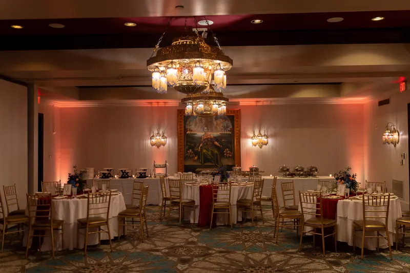
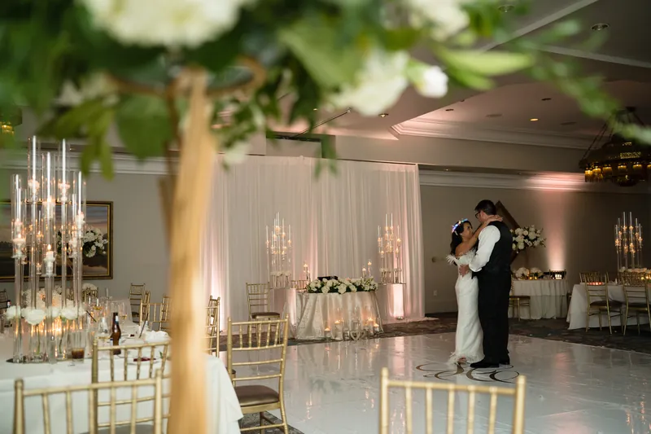

One of St. Augustine's most iconic historic hotels — Spanish Moorish towers, candlelit courtyards, and a location right in the heart of the historic district — here's what to know before booking your wedding at Casa Monica Hotel.
Casa Monica Hotel opened in 1888 as one of St. Augustine's premier luxury hotels, built by Franklin Smith in a Spanish Moorish style. After decades as a Flagler hotel and later a county courthouse, it was restored and reopened as a luxury hotel in 1999. Today it operates as part of the Kessler Collection and is consistently ranked among the top wedding venues in Northeast Florida.
The hotel's combination of Spanish-inspired architecture, downtown St. Augustine location, full-service hotel amenities, and experienced event staff makes it one of the most complete wedding venue packages in the region. Footloose Entertainment is on Casa Monica's preferred vendor list and works there regularly.
Casa Monica's event spaces span multiple floors and settings, giving couples flexibility across different room sizes and aesthetics:
| Space | Capacity |
|---|---|
| Flagler Ballroom | Up to 250+ seated guests |
| Casa Monica Courtyard | Outdoor ceremonies, cocktail receptions |
| Rooftop Terrace | Intimate ceremonies, cocktail gatherings |
| Private Dining Rooms | Rehearsal dinners, smaller receptions |
The Flagler Ballroom is the main reception space — high ceilings, ornate details, and a full dance floor setup. The courtyard and rooftop are popular for outdoor ceremonies with the historic district as a backdrop.

A Casa Monica wedding typically begins with an outdoor ceremony in the courtyard or on the rooftop terrace, taking advantage of the hotel's architecture and the downtown St. Augustine backdrop. Guests then move inside for cocktail hour before the reception in the Flagler Ballroom.
From an entertainment standpoint, the outdoor-to-indoor flow means two distinct setups — a wireless microphone and speaker system for the ceremony space, and a full DJ and dance floor configuration for the ballroom reception. Footloose Entertainment is on Casa Monica's preferred vendor list and coordinates both phases with the hotel's event team well before your wedding day.
Footloose Entertainment is on Casa Monica Hotel's preferred vendor list and has provided wedding entertainment there regularly. That relationship means we already know the hotel's load-in procedures, power access in each event space, and the coordination rhythm with their event management team. We're not working through any of that for the first time on your wedding day.
The main planning consideration at Casa Monica is the ceremony-to-reception transition. We confirm the setup and transition plan directly with the hotel's event staff in advance so the evening flows without gaps.
What we confirm before every Casa Monica Hotel event: load-in access for each space, ceremony speaker placement and microphone plan, transition timing from outdoor ceremony to indoor reception, and any hotel-specific coordination with event staff.
A photo booth works well at Casa Monica Hotel. We plan placement during pre-event coordination so the booth is positioned where guests naturally circulate and stays active throughout the night.
Footloose Entertainment's DJ & MC packages start at $1,495, with final pricing shaped by guest count, hours of coverage, and any add-ons. See what's included or request a quote for your date.
Casa Monica Hotel is one of the most distinctively atmospheric wedding venues in Northeast Florida — the Moorish Revival architecture, the rooftop terrace, and the downtown St. Augustine backdrop give it a character that no hotel ballroom or country club can replicate. The music program at Casa Monica has to honor that setting while still delivering a great reception.
Ceremony options at Casa Monica are uniquely varied: the courtyard, the rooftop Cordova Terrace, or an indoor setup in one of the ballrooms. Each has different acoustic properties. The courtyard and rooftop are open-air and call for portable PA setups; the Flagler Ballroom is a grand interior space with more acoustic predictability.
What to know about sound and logistics:
From our experience: Casa Monica weddings have a built-in magic to them — the architecture does a lot of the work. Couples who let the setting breathe and build their music program around it rather than fighting it end up with some of the most memorable receptions we've been part of.

The Flagler Ballroom accommodates up to 250 or more guests for a seated reception. Smaller spaces including the courtyard and rooftop can host more intimate ceremonies and cocktail receptions.
Yes. The hotel's courtyard and rooftop terrace are popular outdoor ceremony options with the historic district as a backdrop. Indoor ceremony options in the Flagler Ballroom are also available.
Footloose Entertainment is on Casa Monica's preferred vendor list and has provided entertainment there regularly. We know the load-in procedures, power access in each space, and the hotel's event coordination process — so nothing is figured out for the first time on your wedding day.
Yes. Casa Monica handles catering in-house as part of its full-service hotel event offering, which significantly simplifies vendor coordination for couples.
Yes — the Flagler Ballroom has ample space for a photo booth alongside the reception setup. We plan placement during pre-event coordination.
Casa Monica hosts weddings, corporate events, rehearsal dinners, and private celebrations. The hotel's full-service team handles multiple event types throughout the year.